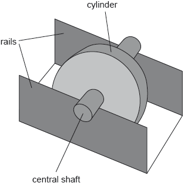
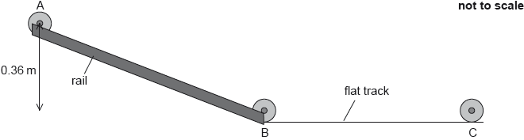

SL Paper 3
A uniform ladder of weight 50.0 N and length 4.00 m is placed against a frictionless wall making an angle of 60.0° with the ground.
![]()
Outline why the normal force acting on the ladder at the point of contact with the wall is equal to the frictional force F between the ladder and the ground.
Calculate F.
The coefficient of friction between the ladder and the ground is 0.400. Determine whether the ladder will slip.
Markscheme
«translational equilibrium demands that the» resultant force in the horizontal direction must be zero✔
«hence NW = F»
Equality of forces is given, look for reason why.
«clockwise moments = anticlockwise moments»
50 × 2cos 60 = NW × 4sin 60 ✔
«»
F = 14.4«N» ✔
maximum friction force = «0.4 × 50N» = 20«N» ✔
14.4 < 20 AND so will not slip ✔
Examiners report
Many candidates stated that the resultant of all forces must be zero but failed to mention the fact that horizontal forces must balance in this particular question.
Very few candidates could take moments about any point and correct answers were rare both at SL and HL.
The question about the slipping of the ladder was poorly answered. The fact that the normal reaction on the floor was 50N was not known to many.
A wheel of mass 0.25 kg consists of a cylinder mounted on a central shaft. The shaft has a radius of 1.2 cm and the cylinder has a radius of 4.0 cm. The shaft rests on two rails with the cylinder able to spin freely between the rails.

The stationary wheel is released from rest and rolls down a slope with the shaft rolling on the rails without slipping from point A to point B.

The wheel leaves the rails at point B and travels along the flat track to point C. For a short time the wheel slips and a frictional force F exists on the edge of the wheel as shown.

The moment of inertia of the wheel is 1.3 × 10–4 kg m2. Outline what is meant by the moment of inertia.
In moving from point A to point B, the centre of mass of the wheel falls through a vertical distance of 0.36 m. Show that the translational speed of the wheel is about 1 m s–1 after its displacement.
Determine the angular velocity of the wheel at B.
Describe the effect of F on the linear speed of the wheel.
Describe the effect of F on the angular speed of the wheel.
Markscheme
an object’s resistance to change in rotational motion
OR
equivalent of mass in rotational equations
OWTTE
[1 mark]
ΔKE + Δrotational KE = ΔGPE
OR
mv2 + I = mgh
× 0.250 × v2 + × 1.3 × 10–4 × = 0.250 × 9.81 × 0.36
v = 1.2 «m s–1»
[3 marks]
ω «= » = 100 «rad s–1»
[1 mark]
force in direction of motion
so linear speed increases
[2 marks]
force gives rise to anticlockwise/opposing torque on
wheel ✓ so angular speed decreases ✓
OWTTE
[2 marks]